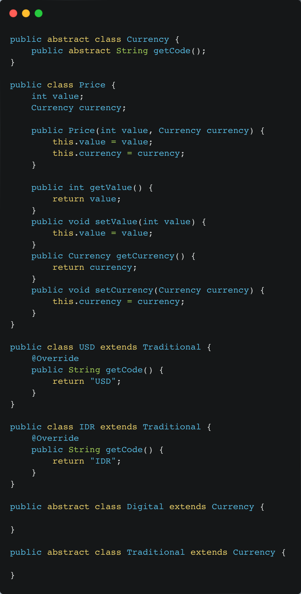
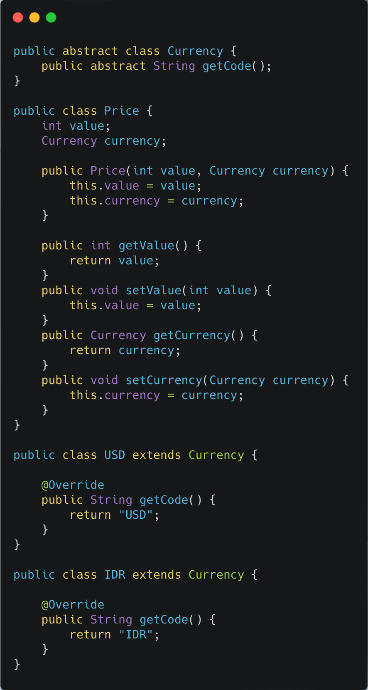

The Dispensable
Speculative Generality
–– Penjelasan Smell
Smell Speculative Generality bermakna Class, method, field, atau parameter yang sudah disiapkan walaupun belum dipakai. Bahkan sebenarnya tidak ada dalam requirement. Biasanya karena programmer berspekulasi bahwa ini akan dibutuhkan. Namun ternyata setelah produk berjalan lama, spekulasinya ini tidak terbukti. Hal ini tentunya menjadi masalah karena kita membuat code lebih sulit dibaca untuk hal yang tidak perlu.
–– Penyelesaian
Requirement dari client adalah Price bisa memiliki Currency antara IDR atau USD. Programmer berspekulasi bahwa IDR dan USD adalah kurs jenis tradisional, nantinya akan ada kurs jenis digital seperti bitcoin. Oleh karena itu, Programmer membuat hirarki seperti di dalam package before.
Sehingga perlu dilakukan refactor kode dengan menggunakan method Collapse Hierarchy. Kelas Traditional dan Digital dihapus. kelas USD dan IDR menjadi turunan langsung dari kelas Currency.
Kode setelah direfactor:
